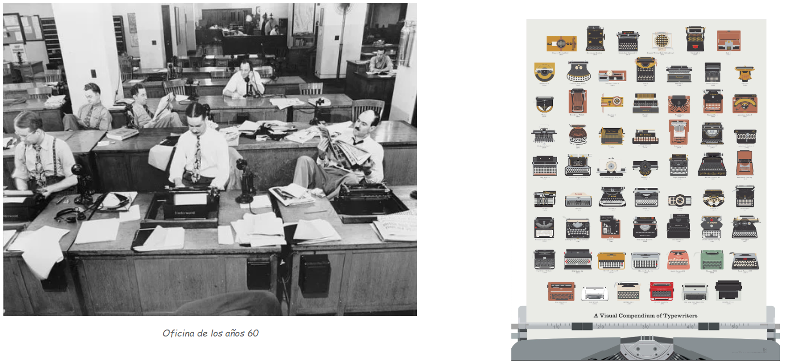
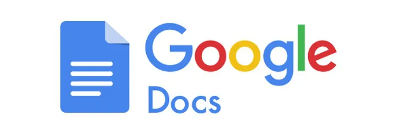
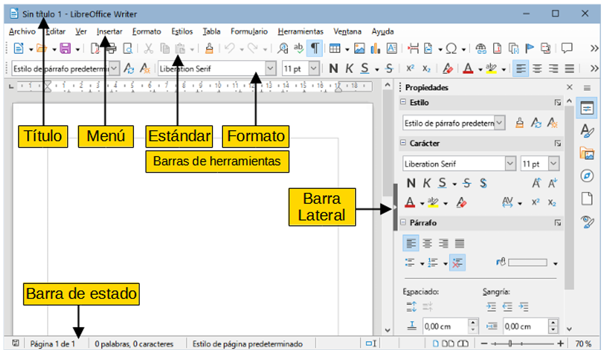
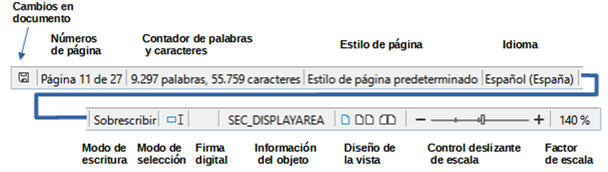

¿Qué procesadores de textos utilizas en tu casa y en el Instituto?
¿Qué se puede incluir en un texto creado con un procesador de textos?
El profesor de Geografía e Historia te pide que realices un trabajo escrito sobre un tema concreto, que cumpla varias especificaciones.
Te pide el trabajo en formato digital, concretamente, realizado con el procesador de textos de Google.
En este tema vamos a estudiar las posibilidades de este editor de texto, haciendo incapié en los aspectos que nos ayuden a realizar este tipo de trabajos de manera más fácil y con aspecto más "profesional".
Uno de los primeros sitios en los que empezaron a utilizarse los ordenadores fue en las oficinas, debido a la gran cantidad de documentos, apuntes y datos que se generan a diario.
Desde finales del siglo XIX se han utilizado varios tipos de máquinas mecánicas para escribir documentos en las oficinas, las últimas eran electrónicas y se llamaban "procesadores de texto" e incorporaban funciones como borrado, sinónimos, alineación automática, etc.
Pronto se vio la gran utilidad que aportaban los ordenadores en las oficinas y empezaron a crearse programas específicos para determinadas tareas: escribir textos, guardar fichas de datos, registrar la contabilidad, etc.

A la aplicación de la informática a la oficina se le dio el nombre de ofimática. (Oficina automática).Algunas empresas vendían esos programas en paquetes, a los que se les llamó suites ofimáticas.
A la aplicación de la informática a la oficina se le dio el nombre de ofimática. (Oficina automática).
Algunas empresas vendían esos programas en paquetes, a los que se les llamó suites ofimáticas.
Las suites ofimáticas actuales suelen integrar al menos los siguientes programas:
Procesador de textos: Permite crear documentos con un aspecto profesional; suelen disponer de revisión ortográfica, inclusión de tablas, imágenes, etc.
Hoja de cálculo: Sirve para organizar datos y números en tablas y operar con ellos, también disponen de creación de gráficos, inserción de imágenes, etc.
Programa de presentaciones: Se utiliza para realizar un pase de diapositivas de imágenes y/o texto, con efectos de transición, música, etc.
Base de datos: Permite organizar y consultar gran cantidad de datos (Nombres, direcciones, inventarios, etc).
Hoy en día, la suite ofimática más conocida es la de Microsoft Office, que engloba el procesador de textos Word, la hoja de cálculo Excel, el programa de presentaciones Powerpoint y la base de datos Access, además de otros programas para la gestión del correo electrónico, gestión de imágenes, etc.
Existen otras suites ofimáticas: una de las más populares en la actualidad es la suite LibreOffice.org, que es similar y compatible con Microsoft Office y además tiene la ventaja de ser gratuita.
Existen versiones para varios idiomas y sistemas operativos (Linux, Mac OS X, Windows, etc.) que podemos descargar de la siguiente dirección: https://es.libreoffice.org/
La suite ofimática OpenOffice.org agrupa el procesador de textos Writer, la hoja de cálculo Calc, el programa de presentaciones Impress, y la base de datos Base, etc.
Y por último, existe la suite ofimática de Google Docs , que además de ser gratuita, tiene la ventaja de ser completamente on-line, por lo que está siendo muy utilizada tanto en el ámbito educativo como empresarial.
Presenta varias ventajas, la primera es que no necesita ser instalada, por lo que no ocupa espacio en nuestro dispositivo, siendo multiplataforma, ya que solo es necesario un navegador de Internet para ejecutarla.
Otra ventaja es que permite el trabajo cooperativo, pudiendo varias personas trabajar en un mismo documento simultáneamente.

Google Docs también puede ser instalado en Windows, Mac OS, tablets y teléfonos móviles.
En este tema estudiaremos el procesador de textos de OpenOffice y en los siguientes temas, las demás aplicaciones. Todo lo que aprendamos es trasladable a las demás suites.
Primero abrimos LibreOffice Writer pulsando en el icono de la aplicación.
También podemos escribir la palabra "writer" en el botón de inicio de LLiurex y pulsar en LibreOffice Writer.
Se abrirá la ventana de LibreOffice Writer con el siguiente aspecto.

Partes de la ventana principal de Writer
A continuación explicaremos los elementos de los que está compuesta la ventana principal.
Título
La barra de título se encuentra en la parte superior de la ventana Writer.
Muestra el nombre de archivo del documento en uso. Cuando al documento no se le ha asignado un nombre (está en la memoria, pero no se ha guardado en el disco), aparecerá como Sin título N, donde N es un número. Los documentos sin título se numeran en el orden en que se crean.
👉 Ejemplo: si escribes algo y aún no lo has guardado, arriba pondrá Sin título 1. Cuando lo guardes deberás indicar el nombre.
Menús
En el menú se agrupan por categorías las órdenes que nos ayudan en el trabajo con los documentos.
Al pulsar con el botón izquierdo del ratón en uno de los menús se despliega un submenú para mostrar las diversas órdenes, estas pueden:
Ejecutar directamente una acción, como Cerrar o Guardar, en el menú Archivo.
Abrir diálogos. Se indican mediante tres puntos (…) después de una orden, como Buscar (incluida en el menú Editar).
Abrir otros menús. Se indican mediante una flecha que apunta hacia la derecha.
👉 Si haces clic en un menú, se despliega y puedes elegir lo que necesites.
Barra lateral
La Barra lateral normalmente aparece abierta de manera predeterminada en el lado derecho de la ventana de Writer, con ella puede acceder rápidamente a muchas de las funciones del programa. Si no se muestra, seleccione Ver → Barra lateral en el menú para mostrarla.
La Barra lateral de Writer contiene seis páginas: Propiedades, Estilos (se muestra como Estilos y Formato en algunas instalaciones), Galería, Navegador, Página e Inspector de estilos.
Cada página se puede abrir haciendo clic en su icono correspondiente en la barra de pestañas a su derecha.
Las barras de herramientas y las páginas de la Barra lateral comparten muchas funciones. Una página en esta barra es como una combinación de barra de herramientas y controles de diálogos. Por ejemplo, los iconos para cambiar la letra a negrita o cursiva existen tanto en la barra de herramientas Formato como en el panel Carácter de la página Propiedades.
Elementos de la Barra lateral
Barra de estado
La Barra de estado de Writer se encuentra en la parte inferior del espacio de trabajo.
Proporciona información sobre el documento y formas de cambiar rápidamente algunas características del documento. Se puede ocultar desmarcándo Barra de estado en el menú Ver.

Barra de estado de Writer
Escala
Para cambiar la ampliación de la vista arrastre el deslizador de Escala, haga clic en los signos + y – o haga clic con el botón derecho del ratón en el Factor de escala para mostrar una lista de los valores de ampliación ya establecidos.
Para abrir un documento ya existente hay varias maneras.
Lo más sencillo es ir a Archivo > Abrir en el menú y buscar el documento en la ubicación guardada.
Si solo hay un documento abierto y deseamos cerrarlo, debemos ir a Archivo > Cerrar en el menú o hacer clic en la X en la barra de título. En Windows y Linux, cuando cierre el último documento, LibreOffice se cerrará por completo.
Si deseamos crear un nuevo documento, debemos ir a Archivo > Nuevo > Documento de texto en el menú o hacer clic en el icono Nuevo de la barra de herramientas Estándar.
Abre LibreOffice Writer y escribe el siguiente texto
Texto ejercicio
Guarda el documento como "AA2.2.odt"
Acentos y caracteres especiales
ACENTOS: Para escribir un acento es necesario pulsar primero la tecla de acento y después pulsar la vocal que queremos escribir.
CARACTERES ESPECIALES: Para escribir los caracteres que se encuentran encima de los números es necesario mantener presionada la tecla shift y después pulsar la tecla de número .
Para escribir los caracteres que se encuentran a la derecha de los números es necesario mantener presionada la tecla Alt Gr y después pulsar la tecla de número .
Abre LibreOffice Writer y escribe el siguiente texto:
Texto ejercicio
Guarda el documento como "AA2.4.pdf"
Caracteres especiales y mayúsculas
CARACTERES ESPECIALES: Para escribir los caracteres que se encuentran encima de los números es necesario mantener presionada la tecla shift y después pulsar la tecla de número .
Para escribir los caracteres que se encuentran a la derecha de los números es necesario mantener presionada la tecla Alt Gr y después pulsar la tecla de número .
MAYÚSCULAS: Para escribir mucho texto en mayúsculas se utiliza la tecla de bloqueo de mayúsculas . Al pulsar la tecla, el teclado escribe todo en mayúsculas. Al volver a pulsar la tecla el teclado escribe todo en minúsculas. Para escribir una sola letra en mayúsculas se utiliza la tecla de mayúsculas o también llamada tecla de shift .
Si el teclado está en modo de mayúsculas, al pulsar la tecla shift escribirá en minúsculas.
DIÉRESIS: Para escribir una diéresis (ü) hay que mantener presionada la tecla mientras se pulsa la tecla de diéresis .
A continuación se presiona la tecla U y saldrá en la pantalla la letra con diéresis ü.
Para deshacer el cambio más reciente en un documento, pulsa Ctrl+Z, o elije Edición > Deshacer en el menú o haz clic en el icono Deshacer en la barra de herramientas Estándar.
Para obtener una lista de todos los cambios que se pueden deshacer, haz clic en el pequeño triángulo situado a la derecha del icono Deshacer de la barra de herramientas Estándar. Podremos seleccionar varios cambios secuenciales en la lista y deshacerlos al mismo tiempo.
Después de deshacer los cambios, se activa la función de Rehacer se activa. Para restaurar un cambio deshecho seleccionamos Edición > Rehacer o pulsamos Ctrl+Y o hacemos clic en el icono Rehacer en la barra de herramientas Estándar. Al igual que con Deshacer, haz clic en el pequeño triángulo hacia abajo para obtener una lista de los cambios que se pueden restaurar.
Abre LibreOffice Writer y escribe el siguiente texto:
Texto ejercicio
Reemplaza la palabra punto por cambio usando el diálogo de Buscar y Reemplazar. Adjunta captura de pantalla del proceso.
Cambia el factor de escala en la parte inferior derecha de la ventana, a 160% pulsando el botón - o el botón +.Adjunta captura de pantalla del proceso.
Selecciona el último párrafo.Adjunta captura de pantalla del proceso.
Seleccionar texto en Writer es similar a seleccionar texto en otras aplicaciones. Puedes deslizar el cursor del ratón sobre el texto o usar varios clics para seleccionar una palabra (doble clic), oración (triple clic) o párrafo (cuádruple clic)
Para seleccionar elementos no consecutivos:
1. Selecciona el primer fragmento de texto.
2. Pulsa Mayús+F8 para habilitar el modo de Selección de añadido.
3. Usa las teclas de flecha para moverte al comienzo del siguiente fragmento de texto que se seleccionará.
4. Manten pulsada la tecla Mayús y seleccione el siguiente fragmento de texto.
5. Repite tantas veces como sea necesario.
Cortar y copiar texto en Writer es similar a cortar y copiar texto en otras aplicaciones.
Puedes copiar o mover texto dentro de un documento o entre documentos, arrastrándolo o usando las entradas del menú, íconos o atajos de teclado para selecciones.
También puedes copiar texto de otras fuentes, como páginas web y pegarlo en un documento de Writer.
Para mover (arrastrar y soltar) el texto seleccionado con el ratón, arrástralo a la nueva ubicación y suéltalo; el cursor cambia de forma mientras se arrastra.
Para copiar el texto seleccionado, manten pulsada la tecla Ctrl mientras arrastras. El texto conservará el formato que tenga en su origen.
Para mover (cortar y pegar) el texto seleccionado, usa Ctrl+X para cortar el texto, inserta el cursor en el punto de pegado y usa Ctrl+V para pegar. Alternativamente, utiliza los botones Copiar/Pegar de la barra de herramientas estándar o las opciones del menú Editar.
Cuando pegas texto, el resultado depende del tipo de letra del texto y de cómo lo pegas. Si haces clic en el botón Pegar, de la barra de herramientas Estándar, el texto pegado conservará su formato original (como negrita o cursiva). El texto pegado desde sitios web u otras fuentes puede contener marcos o tablas como parte del formato original.
Para eliminar el formato original y que el texto pegado tenga el mismo formato que el párrafo del punto de inserción, usa el menú Editar > Pegado especial.
 El procesador de textos¶
El procesador de textos¶


 y después pulsar la vocal que queremos escribir.
y después pulsar la vocal que queremos escribir. y después pulsar la tecla de número
y después pulsar la tecla de número  .
Para escribir los caracteres que se encuentran a la derecha de los números es necesario mantener presionada la tecla Alt Gr
.
Para escribir los caracteres que se encuentran a la derecha de los números es necesario mantener presionada la tecla Alt Gr  y después pulsar la tecla de número
y después pulsar la tecla de número 
 . Al pulsar la tecla, el teclado escribe todo en mayúsculas. Al volver a pulsar la tecla el teclado escribe todo en minúsculas. Para escribir una sola letra en mayúsculas se utiliza la tecla de mayúsculas o también llamada tecla de shift
. Al pulsar la tecla, el teclado escribe todo en mayúsculas. Al volver a pulsar la tecla el teclado escribe todo en minúsculas. Para escribir una sola letra en mayúsculas se utiliza la tecla de mayúsculas o también llamada tecla de shift